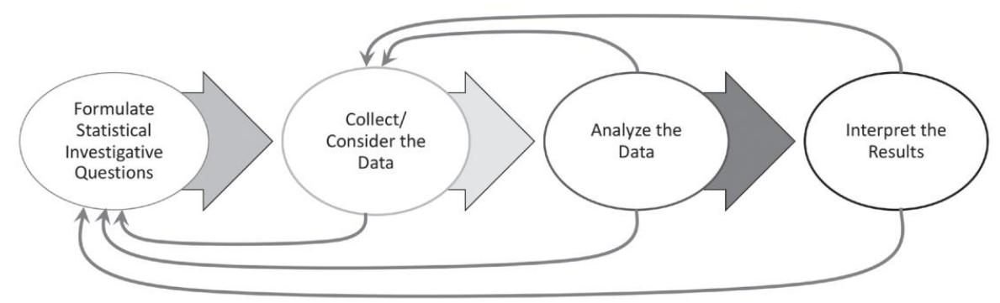

1 이해당사자
한국 R 사용자회에서는 통계패키지를 사용하고 있는 다양한 사용자의 요구를 충족시키기 위해 다양한 기능이 포함된 소프트웨어, 콘텐츠, 데이터, 커뮤니티를 운영하고 있습니다.
- 학생: 귀납적 사고방식과 문제풀이 방식을 이해한 후에 학생 스스로 데이터를 가지고 분석을 할 수 있는 도구가 필요
- 교사: 귀납적 사고방식과 문제풀이 방식을 학생에게 전달할 수 있는 효과적인 도구가 필요
- 개발자: 학생과 교사 및 이해당사자가 필요한 통계 관련 콘텐츠, 데이터, 소프트웨어를 개발할 수 있는 플랫폼과 네트워크가 필요
- 석박사 논문: 데이터 사이언스 시대에 맞는 맞춤형 석박사 논문 제작 및 개발을 지원할 수 있는 도구가 필요
2 도구
- 교사 : https://github.com/bit2r/bitStat-HS
- 학생 : https://bitstat.shinyapps.io/bitstat/
- 개발자: https://github.com/bit2r
- 논문제작과 글쓰기
- 통계 가설검정: https://r2bit.shinyapps.io/infer_shiny/
- 디지털 글쓰기: http://r2bit.ddns.net/
3 GAISE II
2020년 Pre‑K‑12 통계 교육 평가 및 교육 지침: 통계 및 데이터 과학 교육을 위한 프레임워크 보고서(GAISE II)가 한국어로 번역되어 출간되었습니다.
Pre-K-12 Guidelines for Assessment and Instruction in Statistics Education II (GAISE II)
저는 우리가 아이들이 마주하게 될 세상, 즉 데이터가 주도하는 세상을 준비할 책임이 있다고 믿습니다. 기본적인 데이터 유창성은 대부분의 좋은 직업에 대한 요구 사항일 뿐만 아니라 재정 지식 측면에서든, 우리 자신의 건강에 대해 좋은 선택을 하는 경우든, 또는 누구와 무엇을 믿어야 하는지 아는 것과 같이 보다 일반적으로 삶을 탐색하기 위한 요구 사항입니다.
출처: Freakonomics 공동 저자인 Steve Levitt 2019년 10월 2일 팟캐스트
4 GAISE II 강조사항
통계적 문제 해결 과정 전반에 걸쳐 질문을 하는 것의 중요성(통계 조사 질문 모방, 데이터 수집 또는 고려, 데이터 분석 및 결과 해석), 그리고 이 프로세스가 데이터와 관련된 모든 연구에 대한 통계적 추론의 최전선에 남아 있는 방법
다양한 데이터와 변수 유형에 대한 고려, 통계적 조사 질문에 답하는 데 도움이 되는 데이터 수집 방법 또 는 데이터 고려 방법의 신중한 계획, 데이터 수집, 정리, 질문 및 분석 프로세스의 중요성
모든 유아원‑12학년 교육 수준 전반에 걸쳐 다변량 사고 포함
모든 수준에서 무작위성을 수량화하는 확률적 사고의 역할
현대의 통계적 실천이 기술과 얽혀 있다는 인식, 그리고 가능한 한 기술 통합의 중요성
통계정보를 명확하고 정확하게 전달하는 것의 중요성 증대
학교 차원에서 평가의 역할, 특히 개념적 이해를 측정하고 통계적 문제 해결 과정과 관련된 통계적 추론을 요구하는 항목
5 통계적 문제 해결 프로세스
I. 통계 조사 질문 공식화 II. 데이터 수집/고려 III. 데이터 분석 IV. 결과 해석

6 Dollar Street 프로젝트
Gap Minder 에서 시작한 Dollar Street 프로젝트를 통해 생활수준을 가늠할 수 있습니다.
7 다윈 핀치새
데이터 출처: (Grant & Grant, 2013)